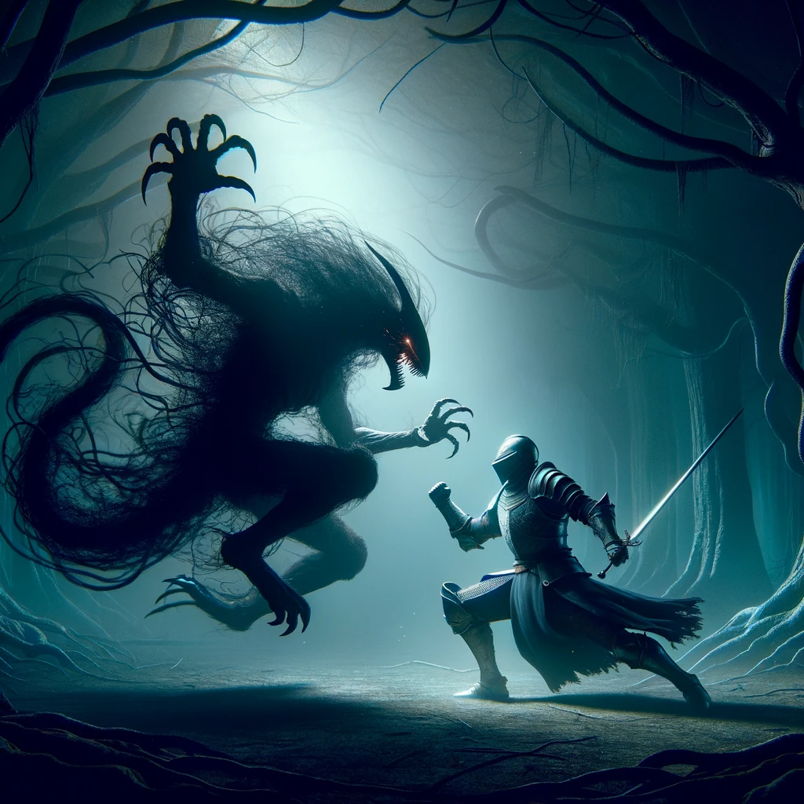
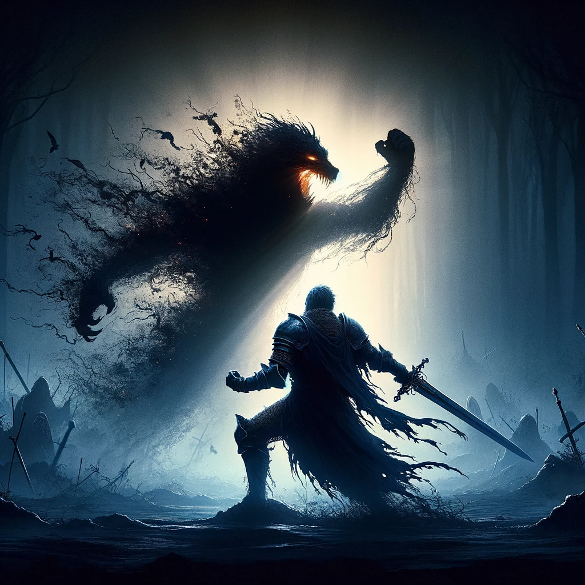

Battle Against the Unseen: A Tale of Light and Darkness
The Beast of Shadows, an ethereal entity born from the darkest corners of legend, stands before you. Its form is a swirling vortex of darkness, a living nightmare defying the laws of nature. Armed with your sword, a lone beacon in the encroaching gloom, you prepare to face this spectral terror.
The beast attacks with relentless fury, its tendrils of shadow striking with lethal intent. You move with the grace and speed of a seasoned warrior, dodging the spectral assaults. Striking back with your enchanted steel, you realize that each successful blow disperses a part of its dark essence, a testament to your determination and skill.
As the battle rages, you feel the ancient magic within your armor stir to life, responding to the presence of evil. With a battle cry that echoes through the void, you ignite your blade with holy fire, its radiant light piercing the all-encompassing darkness. You charge with the might of a thousand suns, your sword a streak of purifying flame.
In an epic confrontation, you meet the Beast head-on. With a masterful thrust, empowered by the light of ages, your sword pierces the heart of the shadowy entity. A brilliant explosion of light ensues, engulfing the beast in a cascade of shimmering flames. The darkness screams, its form disintegrating under the relentless onslaught of light.
As the last wisps of shadow fade, a serene calm settles over the land. You stand victorious, a lone knight who faced the darkness and emerged triumphant. This battle will be remembered, a tale of courage and light prevailing against the deepest shadows.